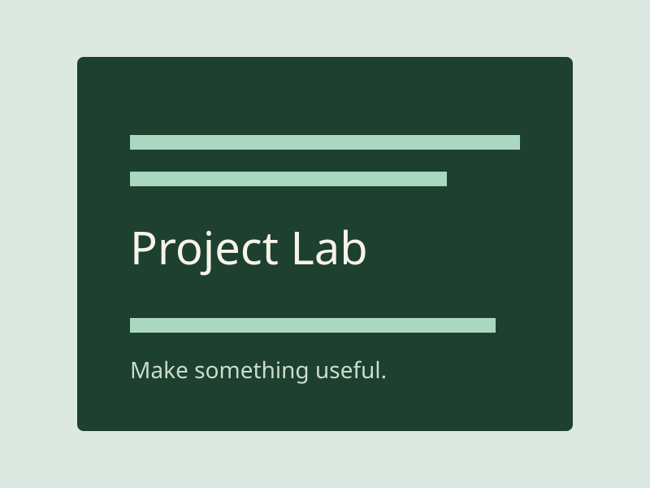

Pointer tilt
Normalized pointer coordinates, bounded transforms and requestAnimationFrame cleanup.
A little perspective.
Move a mouse over the card. Touch and reduced-motion users get a stable view.
Tilt enabled for a fine pointer.
Normalized pointer coordinates, bounded transforms and requestAnimationFrame cleanup.
Move a mouse over the card. Touch and reduced-motion users get a stable view.
Tilt enabled for a fine pointer.
